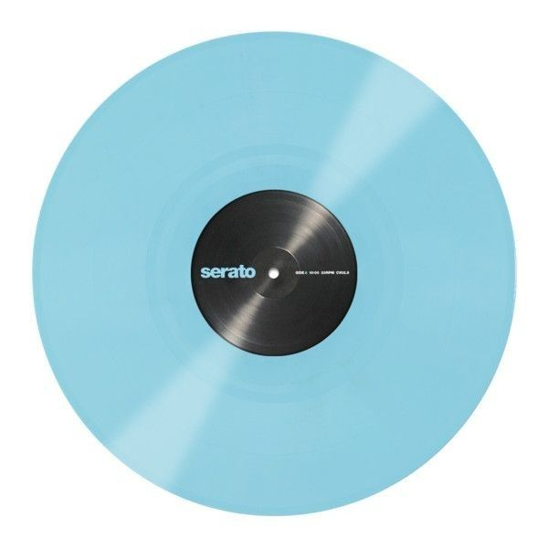
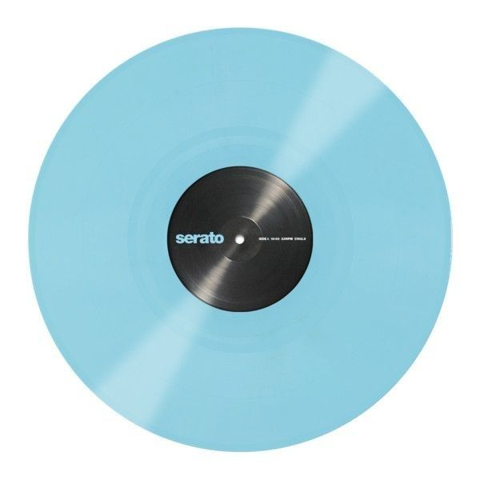

//
很多事情的宗旨與核心都是因為愛。
//
| 演唱:TRUSH | 收錄專輯:Holy Trip |
| 發行時間:2021 | 提名紀錄:無 |
LYRICE
感謝你曾經給我留下的傷
讓我有比從前要強悍的心臟
感謝在背後支撐住的力量
讓每次暴風雨來臨時還能擁有信仰
是什麼讓我們可以相遇
為什麼讓我們碎的支離
回頭看所有安排好的命運
才認識了註定
是你成為我的盔甲
抵抗所有千軍萬馬
是你讓我懂得原諒
放下過去 凝視遠方
不掙扎 不抵抗
接受失去 擁抱徬徨
到最後 一直在尋找的答案
原來都是因為愛
再美的風景 如果沒有抬頭看
怎麼知道自己不用深陷在黑暗
Think about your love ones
Remember they're always around
找到你內在的答案就是解藥
是什麼讓我們可以相遇
為什麼讓我們碎的支離
回頭看所有安排好的命運
才認識了註定
是你成為我的盔甲
抵抗所有千軍萬馬
是你讓我懂得原諒
放下過去 凝視遠方
不掙扎 不抵抗
接受失去 擁抱徬徨
到最後 一直在尋找的答案
原來都是因為愛
You make me wanna stay forever
Endless night go on and on
Let's dive the dream together
Just feel the vibe all around
I've been searching for the answer
Aimlessly looking around
In this moment nothing matters
And the answer is love
是你成為我的盔甲
抵抗所有千軍萬馬
是你讓我懂得原諒
放下過去 凝視遠方
Just give in this feeling
And let it wash over your skin
到最後 一直在尋找的答案
終究還是因為愛
終究還是因為愛